Pescando


Pescar es una manera fácil de ganar dinero mientras esperas que maduren tus cultivos. Para comenzar tu aventura de pesca, primero debes conseguir una caña de pescar. Vaya a la casa de Zack en Mineral Beach entre las 10:00 a. m. y aproximadamente las 3:30 p. m. para encontrar al transportista rebuscando entre sus pertenencias. Él encontrará una caña de pescar barata y te la dará gratis. Necesitarás tener espacio en la sección de Herramientas de tu mochila para activar este evento.
Se puede pescar en cualquiera de los canales que rodean Mineral Town. Equipa la caña de pescar, presiona el botón Y para lanzar el anzuelo al agua y luego espera hasta que veas un "!" Aparece una burbuja sobre la cabeza del granjero. Para pescar el pescado capturado, presione el botón Y nuevamente. No es necesario presionar el botón de acción una y otra vez para la versión Switch de Friends of Mineral Town.
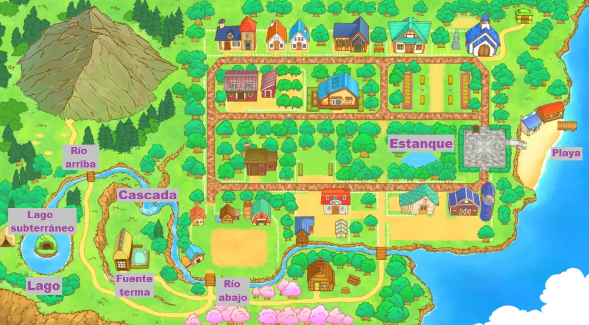
Hay 8 zonas de pesca alrededor de Mineral Town:
- El Lago puedes pescar en primavera, verano y otoño pero no en invierno porque el lago se congela por el frio.
- El Lago subterráneo se encuentra en la mina del lago en el piso 9 i solo puedes llegar a la mina en Invierno porque el lago se congela permitiendote accede a la mina.
- El Río arriba se encuentra dirigiendose a la colina de la madre hay un Río arriba.
- La Cascada donde vide la diosa de la cosecha y se encuentra serca de las aguas termales.
- La Fuente termal esta serca de la cascada donde vide la diosa de la cosecha.
- El Río abajo se encuentra el la parte de abajo de tu granja.
- El Estanque es el area nueva que esta en esta version.
- El Playa se encuentra en parte derecha de toda la ciudad mineral.
No podrás pescar muchos peces hasta que mejores tu caña de pescar en la forja de Saibara. Las herramientas mejoradas se pueden cargar manteniendo presionado el botón Y y luego soltándolo para lanzar. El nivel de carga requerido para que aparezca el pez se enumera en la siguiente tabla
Aunque hay una variedad de peces, los peces que pesques se clasificarán en peces pequeños (24 cm o menos), peces medianos (25 cm a 49 cm) o peces grandes (50 cm o más). La misma especie de pez puede venir en uno o dos tamaños, y no sabrás lo que obtendrás hasta que lo enrolles. Las ganancias que obtengas dependerán del tamaño del pez y no del tipo de pez capturado.
- Peces Pequeños: 50 G (modo normal) o 60 G (modo simple)
- Pescado Mediano: 120 G (modo normal) o 144 G (modo simple)
- Peces Grandes: 200 G (modo normal) o 240 G (modo simple)
Si llegas a capturar todos los peces de la lista Zack te recibirá por la mañana después de que pesques el último tipo de pez. Te felicitará por capturar todos los peces disponibles. ¡Qué bueno que te dio esa caña de pescar! No dará una recompensa, pero vale 1 punto del evento de grado agricola por ser un evento aleatorio.
También recibirás una carta de felicitación de la Diosa de la Cosecha y completarás el logro del juego Maestro Pescador.
Objetos que no son peces
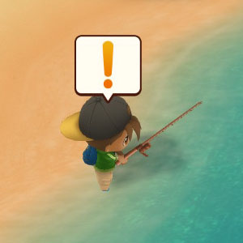
También se pueden obtener otros objetos del agua al pescar. Entre esos objetos puedes atrapar basura como botas, espinas de pescado, latas vacías y ramas. Estas basuras no se pueden arrojar nuevamente al agua, pero puedes tirarla al bote de basura que se encuentra en la Plaza Rosa o venderla a través de tu contenedor de envío por 1 G cada una.
En cambio el Fósil antiguo y el Tesoro pirata son articulos que no solo se consiguen pescando, tambien se lo pueden conseguir al entrenar tu mascota con el juego del frisbi en la playa, es un evento aleatorio y se trata de que al lansar el disco la mascota lo seguira pero se distraera con algo y se pondra a escarbar enves de ir por el frisbi y encontrara un objeto que puede ser el fosil o el tesoro.
Hay otros artículos especiales que puedes capturar en el Playa después de mejorar tu caña de pescar (consulta los niveles mínimos requeridos a continuación) y cargar tu herramienta al nivel de potencia apropiado antes de lanzarla al agua:
| Nº | Objetos | Estaciones | Ubicación | Nivel de carga |
|---|---|---|---|---|
| 01 |  Balla de energia |
Playa | 5 o superior | |
| 02 |  Fósil antiguo |
Playa | 6 o superior | |
| 03 |  Tesoro pirata |
Playa | 5 o superior | |
| 04 |  Mensaje embotellado |
Playa | 5 o superior |
| Nº | Basuras | Ubicacion y nivel de carga |
|---|---|---|
| 01 | Rama |
Cualquiera |
| 02 |  Lata vacía |
Cualquiera |
| 03 |  Bota de goma |
Cualquiera |
| 04 |  Espinas de pescado |
Cualquiera |
Lista de peces normales
Hay 50 peces normales que puedes pescar; El juego original de GBA tenía 45 peces.
|
Lista del 1 al 20 Lista del 21 al 40 Lista del 41 al 50 |
|||||
|---|---|---|---|---|---|
| Nº | Peces | Estaciones | Ubicación | Nivel de carga | Tamaño maximo |
| 01 |  Bacalao Japones |
|
3 | 40 cm | |
| 01 | Bacalao Japones |
|
3 | 40 cm | |
| 02 | 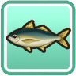 Jurel |
|
3 | 40 cm | |
| 03 | 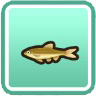 Piscardo |
|
1 | 15 cm | |
| 04 | 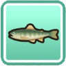 Trucha |
|
1 | 25 cm | |
| 05 | 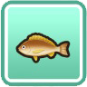 Ronco |
|
3 | 40 cm | |
| 06 | 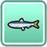 Sardina |
|
1 | 25 cm | |
| 07 |  Salmón japonés |
|
4 | 50 cm | |
| 08 | 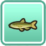 Leucisco |
|
2 | 35 cm | |
| 09 | Anguila |
|
5 | 100 cm | |
| 10 | 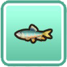 Cacho |
|
1 | 15 cm | |
| 11 | 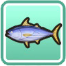 Bonito |
|
5 | 90 cm | |
| 12 | 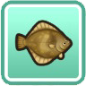 Platija |
|
4 | 60 cm | |
| 13 |  Pez ballesta |
|
2 | 30 cm | |
| 14 |  Carpa dorada |
|
1 | 20 cm | |
| 15 |  Carpín |
|
2 | 30 cm | |
| 16 |  Mero de diente largo |
|
4 | 70 cm | |
| 17 |  Carpa cabezona |
|
5 | 100 cm | |
| 18 | 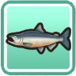 Salmón |
|
4 | 70 cm | |
| 19 | 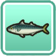 Caballa |
|
4 | 50 cm | |
| 20 | 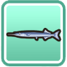 Agujones |
|
3 | 40 cm | |
| Nº | Peces | Estaciones | Ubicación | Nivel de carga | Tamaño maximo |
| 21 | 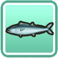 Palometón |
|
5 | 100 cm | |
| 22 | 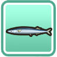 Lucio |
|
3 | 40 cm | |
| 23 | 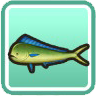 Dorado |
|
5 | 180 cm | |
| 24 | 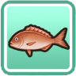 Besugo |
|
5 | 100 cm | |
| 25 | 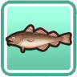 Bacalao |
|
4 | 50 cm | |
| 26 | 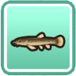 Locha |
|
1 | 12 cm | |
| 27 | 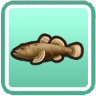 Donko |
|
1 | 25 cm | |
| 28 |  Trucha arcoiris |
|
5 | 100 cm | |
| 29 | 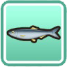 Arenque |
|
1 | 30 cm | |
| 30 |  Carpa plateada |
|
5 | 100 cm | |
| 31 |  Pez de arena |
|
1 | 20 cm | |
| 32 | 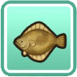 Fletán |
|
5 | 80 cm | |
| 33 |  Pez globo |
|
4 | 50 cm | |
| 34 |  Lubina negra |
|
4 | 50 cm | |
| 35 |  Cola amarilla |
|
5 | 100 cm | |
| 36 |  Pez agalla azul |
|
1 | 25 cm | |
| 37 | 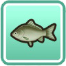 Carpín |
|
4 | 50 cm | |
| 38 |  Caballa de Ojotsk |
|
3 | 40 cm | |
| 39 | 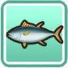 Atún |
|
5 | 250 cm | |
| 40 |  Pez luna |
|
5 | 250 cm | |
| Nº | Peces | Estaciones | Ubicación | Nivel de carga | Tamaño maximo |
| 41 |  Pez leon |
|
2 | 30 cm | |
| 42 | 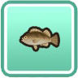 Gallineta |
|
2 | 30 cm | |
| 43 |  Salmón cereza |
|
2 | 30 cm | |
| 44 |  Cabeza de serpiente manchada |
|
5 | 80 cm | |
| 45 | 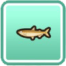 Esperlano |
|
1 | 15 cm | |
| 46 |  Pez cinturón |
|
5 | 200 cm | |
| 47 |  Pez dulce |
|
3 | 30 cm | |
| 48 |  Olor a arena |
|
3 | 30 cm | |
| 49 |  Morenocio dentón |
|
5 | 150 cm | |
| 50 |  Pez volador |
|
2 | 30 cm |
Hay 2 peces en el juego que se llaman Carpín, pero son de colores diferentes y eso se debe a que son dos especies diferente.
Peces guardianes
Hay 7 peces rey en el juego que solo puedes pescar usando una caña de pescar maldita/bendecida o mítica, cargada hasta el nivel 6 o nivel 7. Estos peces son raros y algunos tienen requisitos especiales que deben completarse antes de que puedan aparecer.
Una vez que atrapes un pez guardián, lo arrojarás nuevamente al agua. No puedes conservar ni vender a los reyes del río, pero sus retratos se anotarán en registro de pesca y dicho registro lo encontraras dentro de la estantería de la granja.
| Nº | Pez | Estaciones | Ubicación | Requisitos |
|---|---|---|---|---|
| 51 | 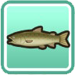 Huchen |
|
Conoce las recetas de cocina de "Pescado a la Plancha", "Sashimi" y "Sushi". | |
| 52 |  Rape abisal |
|
Ir a pescar entre las 8:00 pm y las 8:00 am. | |
| 53 |  Pez gato del manantial |
|
— | |
| 54 | 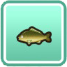 Carpa |
|
Enviar al menos 200 peces. | |
| 55 | 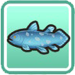 Celacanto |
|
Captura 5 o más peces guardianes. | |
| 56 | Calamar |
|
Ir a pescar entre las 9:00 am y las 12:00 am (medianoche). | |
| 57 |  Arapaima gigante |
|
Captura al menos 50 especies de peces. |
En el juego original de GBA, el calamar se podía atrapar arrojando un pez pequeño al Playa antes de lanzarlo. Dado que la edición actualizada no permite a los jugadores lanzar objetos, se cambió el criterio.
El Arapaima Gigas se agregó al remake. Sabrás cuándo has capturado los tipos de peces necesarios cuando la Diosa te envíe una carta de felicitación. Los otros peces guardianes contarán para los 50 tipos únicos encontrados.
Los requisitos para Huchen son los mismos que los del juego GBA, pero la receta de Sashimi está en tu libro de recetas de cocina como parte de la cocina. El pescado a la parrilla se puede aprender cocinando una receta que requiera pescado mediano como ingrediente para cocinar, y el sushi se puede descubrir cocinando recetas que utilicen onigiri, pescado pequeño, pescado mediano y pescado grande.